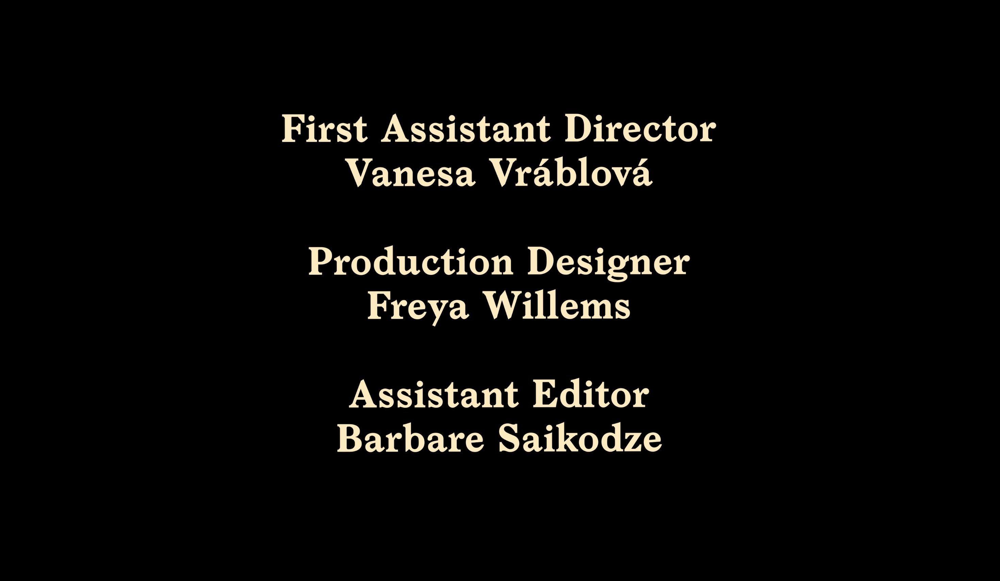
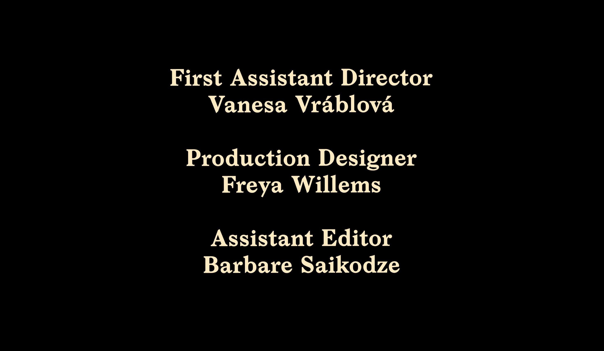

Director: Barbare Saikodze
Screenplay adapted by:
Barbare Saikodze & Freya Willems
Based on the idea by:
Sandor Marton Ivo Duarte Orsolya Hollo
Producer: Bente de Vries
First AD: Vanesa Vrablova
Director of Photography: Mees de Wilde
Production Design: Freya Willems
Editor: Vanesa Vrablova
Assistant Editor: Barbare Saikodze
Sound Design: Freya Willems
Music:
"Tain't Nobody's Biz-ness if I Do"
Lyrics by: Porter Grainger & Everett Robbins
Music by: Jimmy Witherspoon & Jay McShann
Performed by: Jay McShann
"Shades of Spring"
Music by: Kevin MacLeod
Performed by: Kevin MacLeod
Licensed under Creative Commons Attribution 4.0 International
"Aleksandre Kiladze's Jazz Choral"
Music by: Aleksandre Kiladze
Leno Records
Performed by: Jazz Choral
Courtesy of: Manana Darsavelidze
The producers gratefully acknowledge and wish to thank the following for their assistance
De Petrus Library
Giel Tuns
Eetcafe 't Geveltje


 
